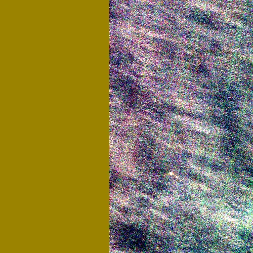

Benchmark / Near-lossless / s2-l1c-10m-4 / s2-l1c-10m-4-47
s2-l1c-10m-4-47
victoria · 2023-06-28 · sample details
Each point shows a configuration at this budget level. The line shows the best observed trade-offs. The All corpora view pools size and decode time across samples for configurations completed on every corpus with results at this level. Broken promises are listed below.
